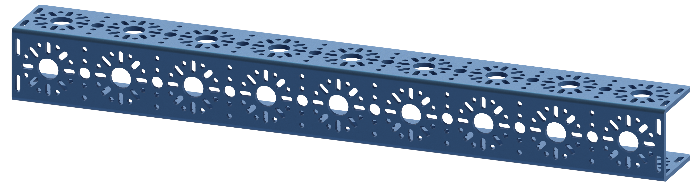
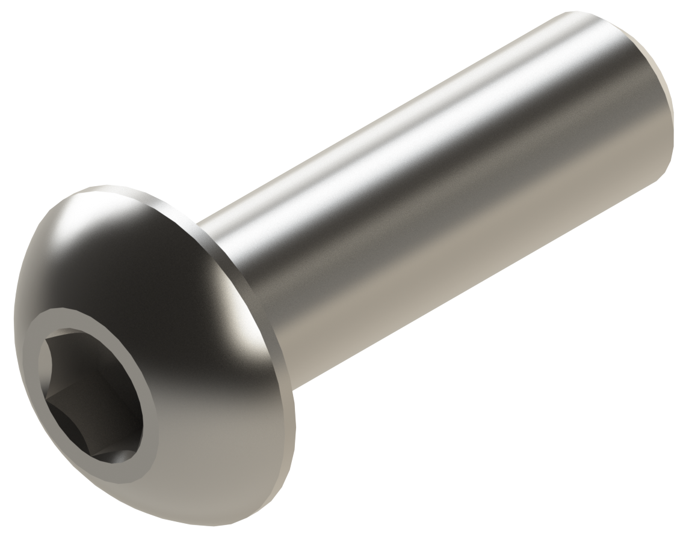

Step 2 - Chassis Frame
Name |
Part # |
Qty |
Image |
|---|---|---|---|
Completed Assembly from Part 1 |
2 |
||
432mm U-Channel |
76010 |
2 |
 |
M3 x 10mm BHCS |
76203 |
16 |
 |
{kind=link}
{kind=link}
Instructions
Align the 192mm U-Channel with the 432mm U-Channel as shown in the picture on the right.
Using 4 M3 x 10mm BHCS, screw the 432mm U-Channel into the End Piece Plate on the 192mm U-Channel, as shown in the left picture. M3 BHCS requires the 2mm Hex Key (Pink).
Do not fully tighten the screws yet. They should be loose so the chassis can be straightened later.
Repeat the process for the other three End Piece Plates connected to the 432mm U-Channel.
Once everything is together, use the flattest surface to make all 4 channels as flat as possible.
With all the channels flat and square to your liking, all 16 M3 x 10mm BHCS can be fully tightened. Remember to use a star pattern when tightening to get even torque
Note
NEED TO ADD AN IMAGE HERE SHOWING THE HEX KEY GOING THROUGH THE CHANNEL
{kind=link}
{kind=link}